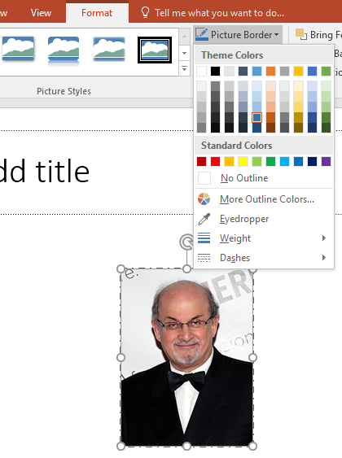

Fişa nr.8
Formatare imagini
Puteți aplica o bordură proprie pentru o imagine astfel:
Pentru detalii:
Adăugare borduri.
- Selectați imaginea de pe diapozitiv,
- Pe fila Format , selectați Bordură imagine(Picture Border).
Meniul vă oferă opțiuni pentru Culoare,Grosime ( grosime linie) și stil linie, inclusiv linii solide și întrerupte.

APLICAŢIE
- Porniţi aplicaţia pentru prezentări şi deschideţi o nouă prezentare
- Prima folie trebuie să fie de tip Titlu, să conţină textul „Angajatori de top”, scris cu font Comic Sans MS, culoare roşie, dimensiune 30.
- Adăugaţi explicaţia „Valabil pentru anul 2023” într-un dreptunghi rotunjit. Pentru dreptunghi, setaţi culoarea verde, în nuanţe diferite, pentru umplere linie.
- Adăugaţi a doua folie. Pentru aspectul diapozitivului selectaţi Titlu şi text. Titlul, Companii naţionale, va fi cu font Comic Sans MS, culoare roşie, dimensiune 30, cu efect de umbră. Secţiunea text conţine:
- CFR Marfă
- CFR Călători
- Hidroelectrica
- Poşta Română
- Pentru text folosiţi formatul implicit.
- A treia folie să aibă formatul “Titlu şi tabel”. Titlul -„Studiu comparativ” va fi scris cu font Courier New, culoare roşie, dimensiune 30. Inseraţi tabelul:
| Anul | CFR Călători | CFR Marfă | Hidroelectica | Poşta Română |
| 2020 | 300 | 50 | 200 | 100 |
| 2021 | 250 | 50 | 150 | 100 |
- Adăugaţi explicaţia „mii angajaţi”, în oval, de culoare verde.
- Folia a patra a prezentării trebuie să conţină următorul text „Călătoriţi ieftin şi în siguranţă!” cu font Comic Sans MS, culoare roşie, dimensiune 30, aliniat centrat.
- Adăugaţi acestei folii imaginea de mai jos. Imaginea va avea chenar violet de tip Punct Linie, grosime 2 pct.
- Folia cinci va conţine o diagramă de tip linie, pe baza datelor din folia trei.
- Adăugaţi în ultimul diapozitiv un buton de acţiune care să permită saltul la primul diapozitiv.
- Aplicaţi, pentru toate diapozitivele, efectul de tranziţie ştergere în jos şi adăugaţi prezentării o temă aleasă de voi. Salvaţi fişierul cu numele vostru "Nume_Prenume.pptx".